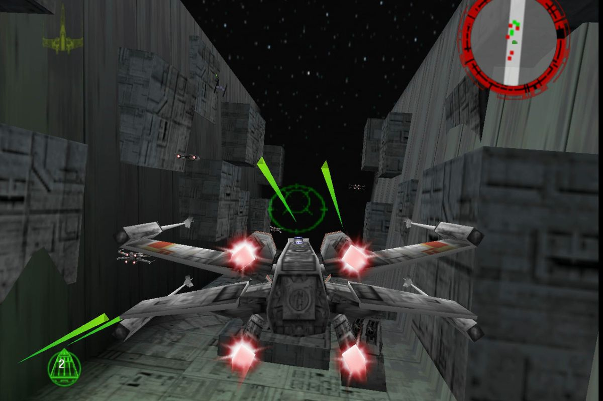

GAMEPLAY
Unlike the Star Wars: X-Wing computer game series that emphasizes space combat simulation, Rogue Squadron is a fast-paced, arcade-style flight action game. Each of the game's 16 levels introduces mission objectives that must be completed to progress to the next level. These objectives are divided into four categories: search and destroy, reconnaissance, rescue, and protect. Enemy aircraft are primarily composed of TIE fighters. Ground defenses are more varied and include three different walkers, laser and missile turrets, tanks, probe droids, shuttles, stormtroopers and speeder bikes. Gameplay is presented from the third-person perspective, however a view from a craft's cockpit is also available. The heads-up display features a health meter, a radar, and an ammunition count for secondary weapons. The player can control five craft: X-wing, A-wing, Y-wing, snowspeeder and V-wing. Each vehicle offers a unique armament arrangement, as well as varying degrees of speed and maneuverability. The game initially restricts the player to a particular craft for each level; however, after a level is completed, it can be replayed with any available craft. Levels set on non-atmospheric moons expose the player's craft to space; thus disallowing the speeder and V-wing (which are repulsorcraft) from being used; but as on other levels, the craft is vertically confined. Nine bonus power-ups are hidden in different levels throughout the game. These bonuses improve a craft's weapons or durability and are applied to each eligible craft for the remainder of the game. The player's performance is measured throughout the game, and performance statistics are checked after each level against three medal benchmarks. Each benchmark contains five categories: completion time, number of enemies destroyed, shot accuracy, number of friendly craft and structures saved and number of bonuses collected. If a player's performance exceeds one of the level's three benchmarks in all five categories, a medal—bronze, silver, or gold—is awarded on completion. Acquiring these medals promotes the player's rank and helps unlock hidden content.
UNLOCKABLE CONTENT
Rogue Squadron includes a number of unlockable secrets. The player can unlock three bonus levels: "Beggar's Canyon", "The Death Star Trench Run", and "The Battle of Hoth". These levels are made available when the player obtains all bronze, silver, or gold medals, respectively, on each level. Alternatively, they can be unlocked via passcode. Unlike the game's primary levels, the bonus levels are adaptions of events from the Star Wars films. "Beggar's Canyon" allows the player to reenact the race mentioned in A New Hope, while "The Death Star Trench Run" allows the player to execute an alternate version of the movie's climactic battle. In the "Battle of Hoth" bonus level, the player can join the Rebel Alliance's combat against Imperial troops, as depicted in The Empire Strikes Back. Several craft are also available when unlocked. Both the Millennium Falcon and a TIE interceptor are initially present in the craft selection screen. However, neither may be selected until the player enters the correct passcodes or achieves all bronze or silver medals, respectively, on the bonus levels. Two other craft can be unlocked, but each is confined to a specific level. One is the T-16 Skyhopper in "Beggar's Canyon", and an AT-ST is playable in a basic demonstration level unlocked only via passcode. A playable model of a 1969 Buick Electra 225 based on a car owned by the game's sound designer, Rudolph Stember, is also included in the game as an Easter egg. During Rogue Squadron's development, Star Wars: Episode I – The Phantom Menace—the first new Star Wars film in more than 15 years—was less than one year from its scheduled release date. To take advantage of this marketing opportunity, Factor 5 included content from the upcoming film in Rogue Squadron. Lucasfilm provided the developers with design art for the Naboo Starfighter, a ship prominently featured in the new film. These designs were used to create an in-game model. Because the game was scheduled to be released six months before the film, Factor 5 was required to keep the ship's inclusion a secret. As a result, most of the game's development team at Factor 5 and LucasArts were not informed of its inclusion. A complex scrambling system was also developed to help hide the ship's code from gamers using cheat cartridges such as GameShark or Action Replay. More than six months after the release of Rogue Squadron, LucasArts unveiled the code to unlock the Naboo Starfighter as a playable craft. The code has been named the Nintendo 64's most well-hidden code because of the length of time before its discovery.